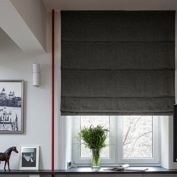

70% клиентов от 5 300 ₽Классические
В опущенном виде — идеально гладкое полотно, при подъёме — ровные горизонтальные складки. Самый универсальный вид: подходит современному, минималистичному, скандинавскому стилю и лофту.
Экономия тканиЛюбой интерьерот 5 300 ₽